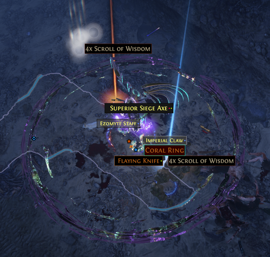

Loot Filters
Loot filters allow you to decrease the amount of items that appear on the ground for you to click. This increases in-game efficiency with less time spent looking at low-value items.
NeverSink Loot Filters
The most popular loot filters used in the game are created by NeverSink and can be found on his PathofExile profile. At the top-right corner of the filters you’d like to use, select FOLLOW.
The filters will populate when you login to the game under the Game options sub-menu.
The semi-strict level filter is the recommended item filter for newer players.
This is the loot from one pack of mobs without a loot filter:
The same loot with the semi-strict loot filter applied:

Hiding filtered items from rendering as drops improves in-game performance by large margin.
The option can be found on the same Game options sub-menu.
Customizing Loot Filters
NeverSink has a public website, FilterBlade, for players to customize loot filters to their liking.
FilterBlade provides a wide variety of customization features from colors palettes to new drop sounds.
If the default filters don’t match the colors or sounds you’d like to see and hear in-game, feel free to customize them to your liking!